电路原理习题册·第一章 电路的基本概念与基本原理（选择 14 / 填空 16 / 计算 13）
1. 来源与边界
- 来源：
电路原理习题册.pdf（46 页，WPS 导出，含完整文本层）。页眉逐字：「电路原理习题册」「2026-2027 学年 第一学期」。第一章占全书第 1–7 页，选择题 14 + 填空题 16 + 计算题 13，共 43 题，配图 1.1–1.35。 - 为什么图用原图：PDF 里的电路图是一张张独立嵌入的小图，已按图号逐张提取入库（
figures/目录，35 张）。其中图 1.25 与图 1.23、图 1.31 与图 1.29 在原 PDF 里就是同一张图（复用同一 对象），照实复用；图 1.26 在原 PDF 里是矢量绘图，按页面原样渲染成图；图 1.23/1.27/1.33–1.35 的线条与文字分两层存放，按「文字+图形」合成渲染，保证标注完整。 - 题面抄录：PDF 文本层虽能选中文字，但等号、负号等符号大量丢失（如「I1 4A」实为 A），一律不可直接采信。本页题面以页面图像为准，由三路独立读图抄录（选择题两路 + 填空与计算一路），再经独立解题人对照修正。
- 使用方法：每题「提示 → 解答」两层折叠，默认收起——先自己动笔。这一章的全部题目只考三件事：判参考方向、列 KCL/KVL、算功率（吸收还是发出看电流从哪端流入）。卡住再展开。
2. 依赖：做之前该会的事
| 知识 | 一句话 | 在哪学的 |
|---|---|---|
| 参考方向与关联方向 | 电流从电压「+」端流入 = 关联； 关联为吸收、非关联为发出 | 课堂笔记 09-23 |
| KCL / KVL | 节点电流代数和为零；回路电压代数和为零；独立方程数 与 | 同上（ 一段） |
| 电位与电压 | ；换参考点电位变、两点间电压不变 | 同上 |
| 电容与电感的 u-i 关系 | 关联方向下 | 同上 |
3. 选择题
选 1（图 1.1）
图 1.1 电路中电压 为（ ）。A. 16 V B. −16 V C. 21 V D. 19 V
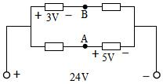
提示：给右下端子定 0 V，沿两条支路各算到 A、B
端口电压 24 V 把左右两个端子的电位差钉死；每条支路内部只有一个标注的电阻压降，逐段加减就行。
解答
取右端子为 V（则左端子 V）。上支路： 标在 B 左侧电阻上（左高右低），所以 V。下支路： V 标在 A 右侧电阻上且 + 端在 A 侧，所以 V。
复盘：这题全部的功夫在「 的 + 端是高电位」这一句上：标注画在哪个电阻上、+ 朝哪头，
中点电位就往哪边偏。A、B 都是支路中点，谁也不用算电流——电阻值根本没给，也不需要。
选 2（图 1.2）
图 1.2 电路中，已知 V， A， A，电流 为（ ）A。A. 1 B. 2 C. 3 D. 不能确定
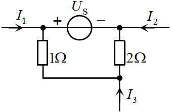
提示：把整个电路看成一个「黑盒子」，数一数有几根导线穿过盒子边界
解答
盒子只有三根外引线：（参考方向流入，值 A）、（流入， A）、（流入）。电荷守恒， 流进盒子的总和为零：
复盘：KCL 的「广义节点」用法——对**任意闭合面**都成立。看到题目问外引线电流、而内部结构复杂，
先数外引线：三根引线一个问题一个方程，直接出答案。
选 3（图 1.3）
电路如图 1.3 所示，则电流 （ ）A。A. 1 B. 2 C. 3 D. 0.5
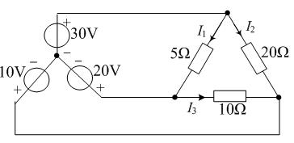
提示：找一条只含「电压源 + 5Ω」的闭合路径，其余元件一个都不用碰
解答
按图读数：顶点 P 接 V 源（上正）；左下顶点 Q 接 V 源（下正，即 Q 端电位高）； 斜支路 接在 P、Q 之间， 参考 P 流向 Q。这条支路两端各是一个电压源钉死的电位，电阻上电流与电路其余 部分无关：
复盘：「理想电压源两端的电位是钉死的」——凡是两端都接理想电压源的支路，电流一律
，跟电路其它部分一刀两断。这是后面前面反复出现的「钉死电位」思想的第一课。
选 4（图 1.4）
电路如图 1.4 所示，电压 等于（ ）V。A. 2 B. 4 C. 5 D. 6
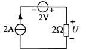
提示：单回路里串着电流源——回路电流谁说了算？
解答
单回路串着 A 电流源，回路电流被它钉死为 A（ V 源只改变电流源两端的电压，管不了电流）。 上电流 A 自上而下、从 的 + 端流入：
复盘：电流源串联支路里，**电流源是唯一发令员**。见到「电流源 + 电阻串联」，电阻上的电流立刻写出，
再 收工。
选 5
个节点、 条支路的连通电路，可以列出独立 KCL 方程和独立 KVL 方程的个数分别为（ ）。 A. ； B. ； C. ； D. ；
提示：独立 KCL 数 = 能少列一个的节点数；独立 KVL 数 = 连支数
解答
独立 KCL： 个（任取一个节点当参考，它的方程由其余节点线性组合而成）；独立 KVL： 个 （即网孔数 ）。选 D。
复盘：这两行是第一章「电路名词」一节的硬结论，课堂例题（5 支路 / 3 节点 / 6 回路）就是用它验的：
。记住顺序别对调——KCL 是 、KVL 是 。
选 6（图 1.5）
如图 1.5 示电路中，则电流 （ ）A。A. 4 B. 2 C. 2.5 D. 4.5
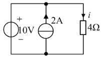
提示：三支路并联——电阻两端的电压是谁定的？
解答
与 V 源直接并联，两端电压被钉死为 V（上 +）。 参考向下、从 + 端流入：
复盘：与选 4 成对——并联看电压源、串联看电流源。**谁的物理量被「源」直接钉死，就先写谁。**
选 7（图 1.6）
如图 1.6 示电路中，电压、电流对此元件是否为关联参考方向（ ）。 A. 是 B. 不是 C. 不能确定 D. 以上都不对
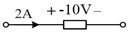
提示：只看箭头从哪端流入、+ 在哪端，标注的数值大小不参与判断
解答
电流 A 箭头指向元件左端，电压 也标在左端——电流从 + 端流入，关联参考方向。选 A。 （标注值是 V，只说明这个元件实际发出功率，与「参考方向是否关联」无关。）
复盘：关联与否是**参考方向的几何关系**，与数值正负无关。两件事必须分开：方向关系统计 的
公式形式，数值正负决定吸收还是发出。
选 8
电容元件的电流、电压（电容上电压与电流正方向一致）的表达式为（ ）。 A. B. C. D.
提示：「正方向一致」= 关联。电容的 由 的变化率决定，还是反过来？
解答
关联方向下电容的端口约束是 （电容电流正比于电压变化率）。选 C。 B、D 把电容当成了电感（ 才是电感）；A 的负号属于非关联方向。
复盘：这对选择题常和电感放一起考。记法：电容 ——「存电荷的是电压，
电流是它的水位变化」；电感对偶地 。
选 9（图 1.7）
如图 1.7 示电路中，电路中的电流值 为（ ）。A. 1 A B. −1 A C. 7 A D. −7 A
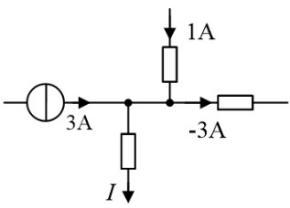
提示：对中央节点写 KCL，「流入 = 流出」，负值照带
解答
流入： A（左）、 A（上）。流出：右侧支路参考朝右流出、标注值 A；下支路流出 。
复盘：KCL 里「参考方向朝外但值为负」= 实际朝内。把负号老老实实带进代数和，不要先「看出」它实际
流向再改符号——一步写对，两步必乱。
选 10（图 1.8）
如图 1.8 示电路中，元件电压 、 分别为（ ）。 A. V， V B. V， V C. V， V D. V， V
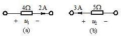
提示：电阻电压 = 电流 × 电阻，正负看电流从 + 端还是 − 端流入
解答
(a)： A 从 的 + 端（左）流入、流经 ，关联： V。 (b)： A 从右向左流、从 的 − 端（右）流入，非关联： V。 选 A。
复盘：一句话模板——**电流从 + 流入取正、从 − 流入取负**。两个小图一个正一个负，专考这句话。
选 11（图 1.9）
如图 1.9 示电路中，电阻 为（ ）。A. 8 Ω B. 10 Ω C. 12 Ω D. 14 Ω
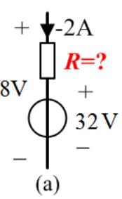
提示：把支路两端 8 V 当已知，沿支路把各段电压加起来
解答
按图：支路电流参考朝下、值为 A（图上标注带负号，实际朝上 A）； V 源 + 上 − 下； 支路总电压（上对下） V。沿支路自上而下：
复盘：这题的坑在「 A 旁边那个负号」——漏看它就得不出选项里的任何值。支路电压 = 各段电压代数和，
未知量只有一个 ，列一条方程收工。
选 12（图 1.10）
如图 1.10 示电路中，电流 值为（ ）。A. −4 A B. 8 A C. 4 A D. −8 A
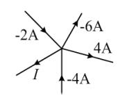
提示：单节点 KCL，代数和一步到位
解答
流入 流出：。选 C。
复盘：三个负号一个正号，纯考「带着符号算」的耐心。这类题检验的不是电路知识，是**符号纪律**。
选 13（图 1.11）
图 1.11 所示电路中，电压 为（ ）。A. −1 V B. 1 V C. −2 V D. 2 V
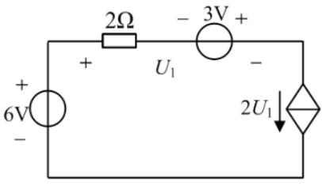
提示：先认受控源（菱形 + 箭头 = 受控电流源），回路电流被它直接定死；再看 到底跨在哪两点
解答
按图：右竖支路是受控电流源（菱形内箭头），控制量 ，回路电流 （顺时针）。 跨整条上支路（+ 在左上角、− 在右上角）：自左向右先经 （电流向右，压降 ）， 再经 V 源（图上 − 左 + 右，从 − 到 + 电位升 3 V），所以
复盘：受控源题两步走：①认类型（箭头=电流源、+/−=电压源），把「被它钉死的量」写出来；
②控制量 用同一回路的欧姆定律+KVL 表达，联立即解。若把 误读成只跨 ， 方程会自相矛盾（ 与 只能同时为零）——那正是读图错位的信号。
选 14（图 1.12）
图 1.12 所示电路中，____V，电阻吸收的功率 ____W。 A. 2 V；3 W B. 3 V；5 W C. 5 V；3 W D. 8 V；7 W
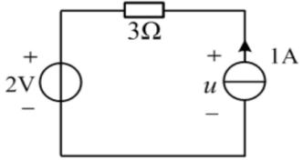
提示：回路电流由 1A 源定；u 用 KVL 从 2V 源和 3Ω 反推
解答
回路电流 A（电流源定死； A 源在右竖、箭头朝上 → 顶边电流向左， 上电流 A 向左）。 沿回路（逆时针方向行进）： A 源两端电压 （+ 上）行进自下而上为升 ；顶边过 顺电流压降 V；左竖过 V 源从 + 到 − 压降 V：
复盘：电流源两端的电压**不由电流源自己定**，由外电路（KVL）倒推——这是「理想电流源」最常考的
一面。功率用 直接算，连方向都不用判（平方恒正，电阻永远吸收）。
4. 填空题
填 1（图 1.13）
图 1.13 电路中电流 ____A，____A。
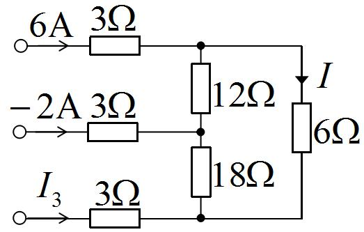
提示：左侧三条支路的左端各自悬空——它们是三个「电流注入器」；给下节点定 0 V，用节点电位解
解答
按图：三条 支路左端互不相连（各自独立端子），右端分别注入上、中、下三个节点； 竖直链为上——中——下；右侧 支路接上、下节点之间， 参考向下。 设 、、：
复盘：这题的题眼是「左端悬空」——三条 支路不是并联（左端不共母线），而是三个独立的电流
注入口。若当成并联分流量，方程组就无解或解错。另外下节点「只进不出」是 KCL 的正常形态： 代数和为零，不必强找「流出」的支路。
填 2（图 1.14）
图 1.14 电路中，已知 A，电流 ____A，____A。
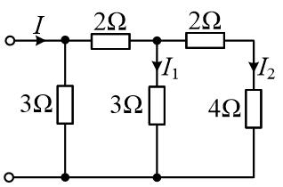
提示：从最远端往回算等效电阻，再逐级分回电流
解答
从最右端往回： 节点只挂 ； 右侧 = ，与该节点上 的 （ 支路）并联 = ； 右侧 = ， 与 并联 = 。总电压 V。 逐级分流（每次按并联反比）：
复盘：梯形网络的标准动作就两步：**从远端折算等效电阻 → 从近端逐级分流**。每级分流都是
「邻支路电阻 / 总电阻」乘上游电流，写清节点字母就不会分错层。
填 3（图 1.15）
图 1.15 电路中，开关 S 打开时，电压 ____V；开关 S 闭合时，电流 ____A。
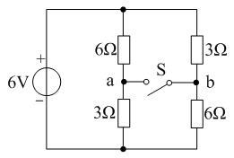
提示：S 断开 = 两个独立分压器；S 闭合后 a、b 合并成一个节点，先求合并电位
解答
S 断开：左右两条支路各自独立分压（ V、）：
复盘：两个空恰好考开关的两种状态：断开比电位、闭合算节点。第二空最容易错在「合并电位」：
S 一闭合，左右支路交叉并联（ 配 ），不是各自 并联——画节点图再算。
填 4（图 1.16）
图 1.16 电路，已知 V， V， V， V，则 ____A，____V。
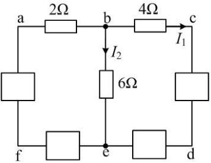
提示：给 f 定 0 V，四个已知电压把 a–e 全部钉出来；I₁ 直接来自 4Ω 的欧姆定律
解答
设 。逐个用 ：
复盘：⚠ **此题原书第一个已知印作「 V」**——但那样第二空再求 就自相矛盾，
且按它解出的 A、 A 与同册计算题 5（同型图、已知 V、答案 A／ A） 对不上。本页按 V 作答，与计算 5 互为印证；原书排印待核对（见文末）。 方法本身是通用的：四个支路电压 + 一个参考点 → 全部节点电位 → 欧姆定律出电流。
填 5
电路的组成包括电源、______和______三大部分。
提示：翻课堂笔记「电路的组成」一节
解答：电源、**负载**、**中间环节**（连接导线与开关等传输、控制部分）。
复盘：三部分对应「产生电能 — 消耗电能 — 输送与分配」，简答题也可能考，按这个顺序背。
填 6
电容元件的电流、电压（电容上电压与电流正方向一致）的表达式为______。
提示：与选 8 同题异形
解答：（关联方向。）
复盘：选择题考认选项、填空题考默写——同一句话两种考法。
填 7
基尔霍夫电流定律是对电路中各支路______所施加的约束关系。
提示：KCL 约束的是哪一类物理量？KVL 约束的又是哪一类？
解答：**电流**。（KCL 源于电荷守恒：节点上电流代数和为零；对偶地，KVL 约束的是**电压**，源于能量守恒。）
复盘：一句话题。KCL 管**电流**、KVL 管**电压**，填空别串门。
填 8
当两个 20 μF 的电容器并联，则并联电容器的总电容为______。
提示：电容并联像电阻串联——直接相加
解答：。
复盘：电容与电阻的串并联公式**对偶**：并联相加、串联取倒数和。与电阻正好相反，别背反。
填 9（图 1.17）
电路如图 1.17 所示，可得：_____V。
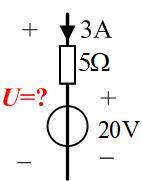
提示：支路里串着电流源——电流就是 3A；U = 各段电压代数和
解答
支路电流由 A 电流源定死（向下）。自上而下： 压降 V（电流从上到下， 上端 +）， V 源 + 上 − 下、压降 V：
复盘：⚠ 图上 的标注跨在整条支路两端（含电流源）。电流源自己的端电压由外电路定——但这题里
「外电路」就是同一条支路里的 与 V 源，所以 仍然可解： V。若把 的 + − 读反，答案变 V，选项/空值会提示你。
填 10（图 1.18）
图 1.18 所示电路，求得 ______A。
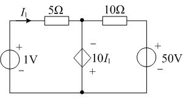
提示：受控源是「电压源」（菱形带 +−），它的电压 = 10I₁；用节点电位一条方程解 I₁
解答
设底线为 0。 节点电位即受控源电压（上 − 下 +，上对下 ）：。 左支路（ V 源 + 上）经 到 ：
复盘：受控源当**电压源**用（它的电压是 ），控制量 再用 支路的欧姆定律
回代——一条方程一个未知数。负号答案说明 实际方向与箭头相反，照抄不误。
填 11
个节点， 条支路的连通电路，可以列出独立 KVL 方程的个数为______个。
提示：与选 5 后半句同源
解答： 个（= 网孔数 ）。
复盘：KVL 独立方程数等于「连支数」：每补一条连支就多一个独立回路。填空只填个数，理解在选 5。
填 12
个节点， 条支路的连通电路，可以列出独立 KCL 方程的个数为______个。
提示：与选 5 前半句同源
解答： 个。
复盘：与填 11 成对出现，注意题目问的是 KCL 还是 KVL，看清再填。
填 13（图 1.19）
图 1.19 所示电路，求电路中电压源发出的功率为______W。
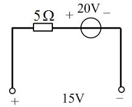
提示：单回路，两个源一个电阻；先解电流，再判 20V 源是发是吸
解答
沿回路（顶边自左向右行进）：过 压降 ；过 V 源（+ 左 − 右）压降 V； 底边自右向左过 V 端口（左 + 右 −）从 − 到 + 升 V：
复盘：I 解出负数是常态，别回头改符号——参考方向下的 A 就是「实际朝反方向 1 A」，
功率判定用实际方向：电流从源的 − 端进、+ 端出 = 发出。
填 14（图 1.20）
图 1.20 所示电路，求元件 A 吸收的功率为____W。
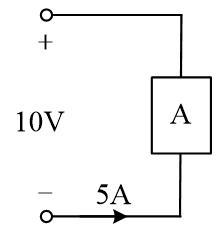
提示：A 的电压就是端口电压；判关联，套 P=UI
解答
A 与 V 端口并联，电压 V（上 + 下 −）。 A 从 A 的下端（− 端）流入、上端流出， 非关联方向：
复盘：吸收为负 = 发出，一句话说清就行。这题也可以一步用「发出 = （电流从 + 端流出）」：
W 发出 = 吸收 W，两种写法等价。
填 15（图 1.21）
图 1.21 所示电路，求元件电压 ______V，______V。
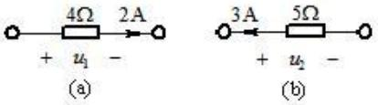
提示：与选 10 同型——电流从 + 流入取正、从 − 流入取负
解答
(a)： A 从 + 端流入 ：。 (b)： A 向左流、从 − 端流入 ：。
复盘：与选 10 几乎逐字相同（图号不同、问法改成填空）——同一知识点在册内重复出现，
正好当第二遍练习。
填 16（图 1.22）
电路如图 1.22 所示，______A；1A 电流源发出功率______W。
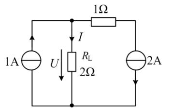
解答
右竖 A 源向下 → 顶边右段电流 A（从顶中节点 流向右上）。 节点 KCL：
复盘：本题是第一章功率题的「全家福」：电流源定电流、KCL 出 、电位倒推源电压、
发出/吸收按实际方向判、最后功率平衡收口。平衡表是自查利器——发出总和 = 吸收总和，不平就是算错。
5. 计算题
计 1（图 1.23）
电路如图 1.23 所示，求开关 S 闭合与断开两种情况下的电压 和 。
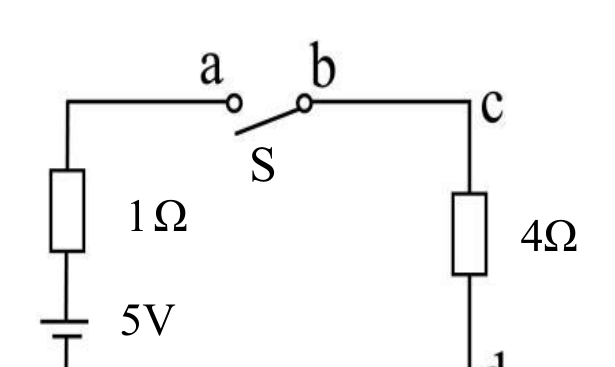
提示：S 闭合 = 回路；S 断开 = 无电流，开路电压顺着「无压降」一路量过去
解答
S 闭合：单回路 、、：
复盘：开关题的标准两问——**闭合算回路、断开量开路电压**。断开时电阻上无电流就无压降，
「电位顺着导线和电阻一路平过去」，谁都不用重算。
计 2（图 1.24）
求图 1.24 所示电路中的电流 。

提示：从右往左折等效电阻；20mA 源的总电流只在源支路里流，节点处分流
解答
自右向左：两个 并联（中间与右侧竖直支路经顶部导线并接）= ；串 得 ；与 节点的 并联 = 。 mA 全部流过 到 ，在 点对半分（两条支路都是 ）：
复盘：折算到「 节点两侧电阻恰好相等」就停——分流比 ，口算收工。这题所有数字都是
为「对半分」铺路的。
计 3（图 1.25）
电路如图 1.25 所示，求开关 S 闭合与断开两种情况下的电压 和 。

提示：图 1.25 与图 1.23 是同一张图
解答
原 PDF 里图 1.25 与图 1.23 复用同一绘图对象（逐字节同一张图），两题同题同解： S 闭合： V、 V；S 断开： V、 V（见计 1）。
复盘：习题册里出现重复题不是错误，是编者安排的第二次机会——第一次没做对的，这次应该秒杀。
计 4（图 1.26）
如图 1.26 所示，求图中电流 和电压 。
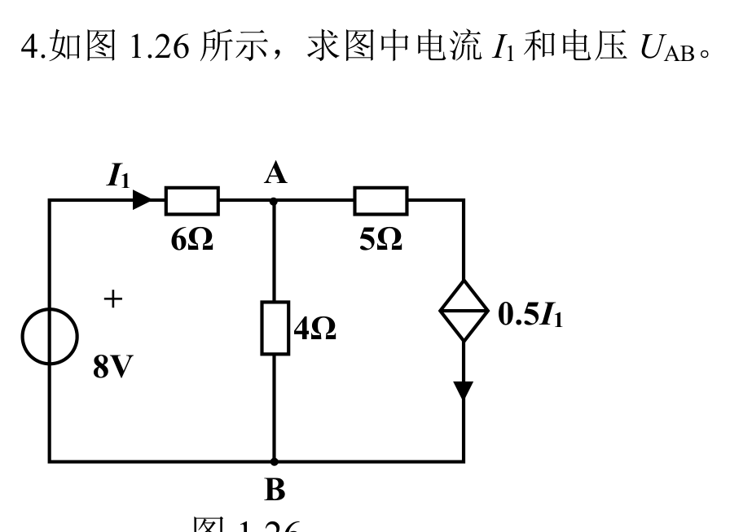
提示：右支路是受控电流源（菱形+箭头），它把右上支路的电流钉成 0.5I₁；节点电位法两条方程
解答
设 （底线）为 0。左竖 V 源 + 上：顶左电位 V。 = 顶线左段电流 = 。 节点 KCL（流入 = 流出）：
复盘：受控电流源在这题里只干一件事——**把右上支路的电流钉成 **，于是 节点的 KCL
把「 电流」也钉成 。两个节点两条方程，未知数只有 （ 用欧姆定律回代），机械解完。
计 5（图 1.27）
电路如图 1.27 所示，已知 V， V， V， V。求 、。
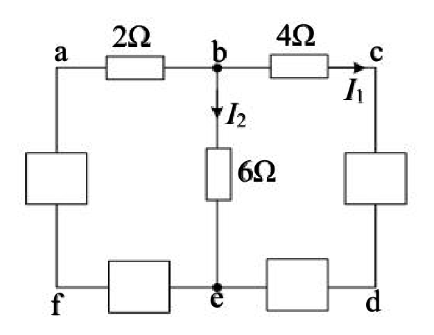
提示：I₁ 直接来自 4Ω 的欧姆定律；I₂ 要先把 b、e 两点间的电压沿「已知量最多的路径」加出来
解答
在 支路上（b→c）：
复盘：⚠ **原书数据自身不闭合**：按这组已知电压反推 支路电流，与 在
节点对不上 KCL（差 A）——四个「已知电压」里至少一个与图上元件值矛盾。本页照教材口径 「给定支路电压 + 局部 KVL + 欧姆定律」作答，不做整体 KCL 校验（详见文末待核对）。 方法要点：任意两点间电压 = 沿任意路径各段电压的代数和，路径挑已知量最多的那条走。
计 6（图 1.28）
电路如图 1.28 所示，求电流 。
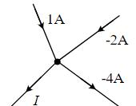
提示：单节点 KCL，负值照带
解答
流入 = 流出：。
复盘：X 形四支路交于一点，KCL 一行写完。与选 12 同款：**先按参考方向列式，负值自然进方程**。
计 7（图 1.29）
电路如图 1.29 所示，求电压 。
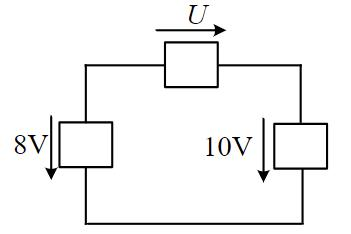
提示：三个抽象方框元件的单回路，KVL 一条方程；注意 U 的参考方向朝右
解答
沿回路顺时针行进：顶边沿 参考方向压降 ；右竖沿 V 的参考（向下）压降 V； 左竖逆着 V 的参考（向下）行进，升 V：
复盘：方框题不给阻值不给电流，考的就是**KVL 本身**：沿行进方向「同向取 +、反向取 −」，
代数和为零。 为负说明顶边电压的实际方向与箭头相反（右高左低）。
计 8（图 1.30）
电路如图 1.30 所示，求开关 S 闭合后电压 和 。
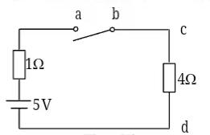
提示：与计 1 的「S 闭合」半题同构
解答
回路电流 A（a→b→c→d）。开关是导线：
复盘：本题只问闭合一种情况（对照计 1 的两问）。结构一模一样，数字一模一样——把计 1 的
「断开」情况自己补问一遍，就是完整练习。
计 9（图 1.31）
电路如图 1.31 所示，求电压 。

提示：图 1.31 与图 1.29 是同一张图
解答
原 PDF 里两图复用同一绘图对象：（见计 7）。
复盘：又一组重复题。第一遍按行进方向老老实实写 KVL，第二遍应该能直接看出 V。
计 10（图 1.32）
如 1.32 图所示，已知：元件 A 吸收功率 60 W；求电流 。
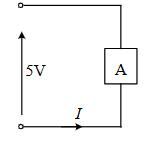
提示：单回路里 A 与 5V 元件首尾相接——A 的电压就是 5V；功率 = 电压 × 电流
解答
沿回路 KVL： 的电压 V（两者构成唯一回路，电压代数和为零：）。 A 吸收 W = （ 为从 A 的 + 端流入的电流）：
复盘：功率题里「电压 电流 = 功率」倒着用（）是常态。先 KVL 定电压，
再用功率定电流，方向由参考方向统一处理。
计 11（图 1.33）
电路如图 1.33 所示，求受控源提供的功率。

解答
设底线为 0。受控源电压（上对下），即 。 左支路：， V。 右支路电流（自 流向右上）： A，即实际 A 流入 。 节点 KCL：流入 A = 受控源支路向下的电流。 受控源两端（上对下） V、电流 A 从 + 端流入：
- 受控吸 + 吸 + V 源吸 ✓。）
复盘：「提供的功率」答负值 = 实际吸收。受控源不是「激励」就一定发电——它的功率完全由外电路
决定，算完发吸才知道。这道题也是填空 10 的完整版：同一电路，先把 解出来，再算功率。
计 12（图 1.34）
电路如图 1.34 所示，求 30V 电压源和 2A 电流源的功率 。

解答
顶线左段是导线： V。右上节点 V（ V 源 + 上）：
- A 源 W + V 源（电流 A 从 + 流入） W = W ✓。
复盘：两个源两个答： V 发 W、 A 源**吸** W。电流源不一定发电、电压源不一定
吸收——全看实际电流方向与端电压的配合。功率平衡一行表是这类题的「验钞机」。
计 13（图 1.35）
如图 1.35 所示电路，列写方程求解电流 ，分析受控源功率情况。

提示：受控源把左支路电流钉成 3i；M 节点 KCL + 中间支路欧姆定律，两条方程两个未知数
解答
设底线为 0、 点电位 。受控源（菱形箭头向上）把左支路电流定为 （向上流入 ）。 中间支路欧姆定律：，即 。 节点 KCL：流入 = 流出 （中间 ）+ 流出 （右 ）：
复盘：受控源功率题的完整流程：**解控制量 → 解受控源电压与电流 → 判发吸 → 平衡收口**。
本题受控源发了 W，比 V 独立源的 W 大得多——受控源能把控制支路的能量 「放大」后送进电路，这正是「有源元件」名字的由来。
6. 小结
第一章 43 题做下来，反复出现的只有四招：
- 参考方向先行：箭头、+− 全按图抄，负值照带代数和——选 9/12、填 1、计 6 全是「符号纪律」题。
- 源钉死什么就先写什么：串联看电流源（选 4/14、填 9/16、计 12），并联看电压源（选 6）； 两端接理想电压源的支路电流与电路其余部分无关（选 3）。
- 电位法通吃多节点：设一个 0 V 点，已知支路电压逐点推电位（填 4、计 5），欧姆定律出电流， KCL 闭合校验。
- 功率题配平衡表：发出总和 = 吸收总和（填 16、计 4/11/12/13 全部用它收口），不平时回头找符号。
受控源（选 13、填 10、计 4/11/13）是本章唯一的新角色：菱形 + 箭头 = 受控电流源、菱形 + ± = 受控电压源； 它先「钉死」一条支路的电流或电压，控制量再用欧姆定律/KVL 回代，最后功率照 判发吸。
完成边界
- 已整理：第一章 43 题（选择 14 / 填空 16 / 计算 13）题面逐字转抄 + 35 张配图原图入库 （图 1.23=1.25、1.29=1.31 同图复用；图 1.26 为矢量渲染；图 1.23/1.27/1.33–1.35 为「线条+文字」 合成渲染）；全部解答与复盘。
- 双签：2026-09-28，三名独立子代理只拿题面与配图重算 43 题：40 题与整理者逐项一致； 3 处以图为准修正整理者初解（选 1 的支路极性读数、填 3 的 A、计 12 的 A 源 实为吸收 W），修正后三方一致。计 4/11/12/13 四题附功率平衡校验（平衡表全部闭合）。
- 〔待核对〕：① 填 4 / 计 5 的已知电压第一个下标（ 还是 ）——两处原书 排印疑似不一致，本页按 V 作答（与计 5 题干一致、数字自洽），请对教材图复核； ② 选 11 图上 A 标注带负号（实际 A）， 依赖此负号；③ 计 5 四个已知电压 与图上元件值不满足全节点 KCL（原书数据不闭合），按教材口径作答；④ 填 9 的 标注跨含 电流源的整条支路，按可解口径取 V 段作答（ V）。
- 未完成：第二至九章（全书 46 页，本次只入第一章）；作业布置范围与截止时间（教师未单独布置， 整册为备考题库——考题即原题，按 handoff §6-E 的课程约定分章推进）。
- 配图管线（2026-09-28 新增）：
站点/build.mjs现将课程/<课>/作业/figures/原样拷入 dist； 页内配图用原生<img>标签（markdown 链接指向 .jpg 会被「原件不入库」降级徽标拦下，勿用）。